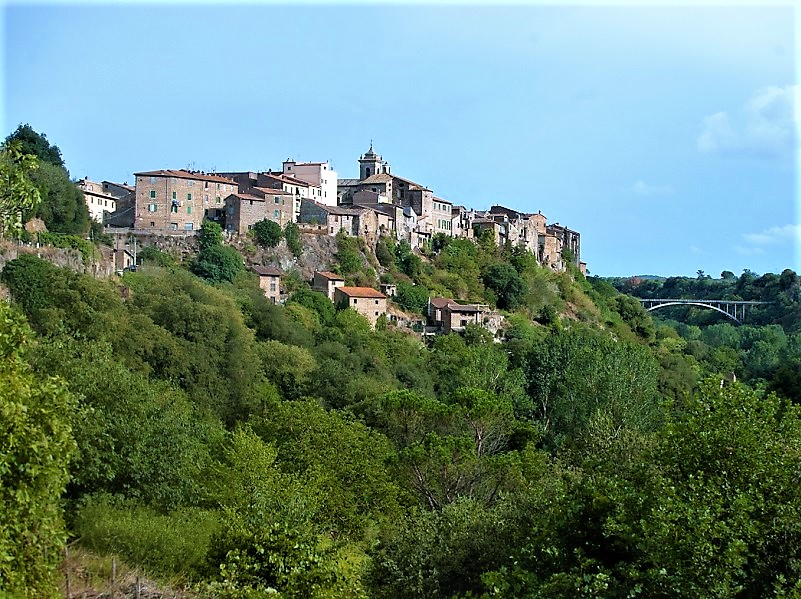
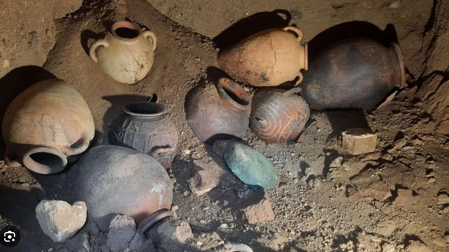
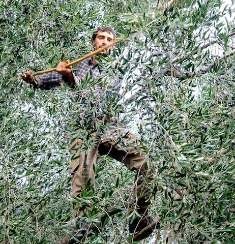
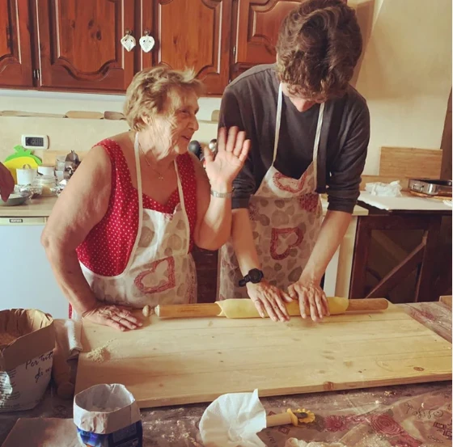
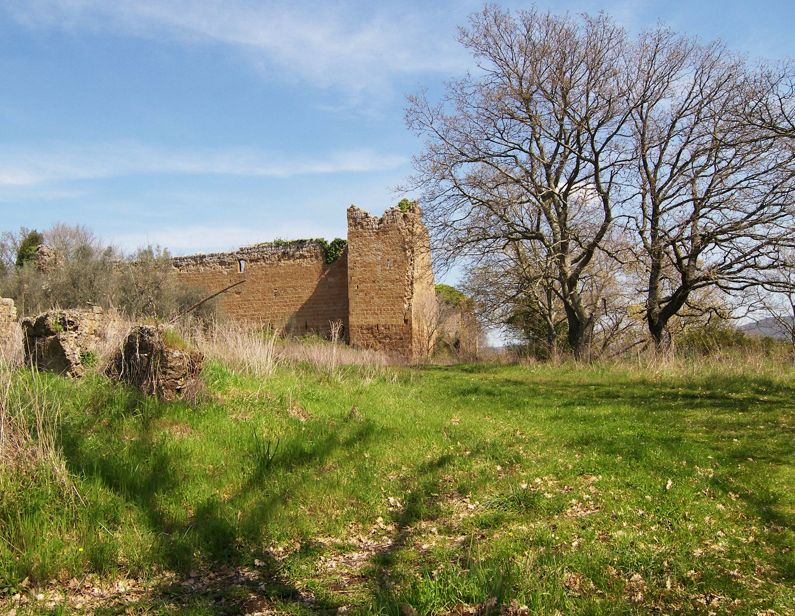
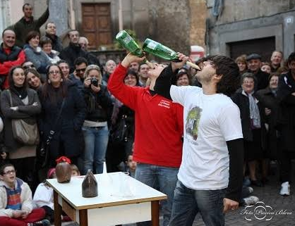
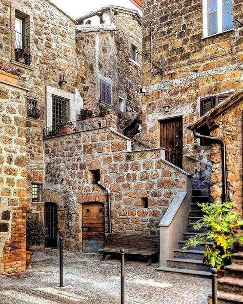

Everything that happens over the six days, morning to evening — olive harvesting, Etruscan tombs, thermal baths, hands-on pasta making, and Blera's Festa delle Cantine.
Mon9
Arrival in Blera
Tue10
Tomb Raider & Tarquinia
Wed11
Olive Harvest & Thermal Baths
Thu12
Olive Mill & Pasta Making
Fri13
San Giovenale Hike & Panonto
Sat14
Cantine Festival
Sun15
Departure
Morning
Airport pickup and transfer to Blera.
Scavenger hunt from the medieval village into the rock-cut tombs.
Farmer's breakfast, then hand-picking olives.
Frantoio visit for yesterday's pressed oil.
Guided hike to the Etruscan site of San Giovenale.
A slow morning.
One last breakfast together.
Afternoon
Free time to settle in.
Day trip to Tarquinia's painted tombs.
Focaccia lunch, then Tuscia Terme's thermal baths.
Lunch at Terrarte, in the olive grove among the sculptures, then a hands-on pasta-making class.
Panonto, Blera's traditional BBQ: bread roasted over embers, new-pressed oil.
Free time to wander the Cantine Festival.
Farewells and transfer to the airport.
Evening
Welcome aperitivo, dinner at a local trattoria.
Dinner in Tarquinia.
Home-cooked local dinner.
Sit down to the pasta you made.
Dinner at Cantina Il Cavone as the festival kicks off.
Goodbye dinner at a local cantina.

Mon · Nov 9
Arrival in Blera
MorningAirport pickup and transfer to Blera.
AfternoonFree time to settle in.
EveningWelcome aperitivo, dinner at a local trattoria.

Tue · Nov 10
Tomb Raider & Tarquinia
MorningScavenger hunt starting in the medieval village, following clues down into the rock-cut tombs.
AfternoonDay trip to Tarquinia's painted tombs.
EveningDinner in Tarquinia.

Wed · Nov 11
Olive Harvest & Thermal Baths
MorningFarmer's breakfast, then hand-picking olives at a local grove.
AfternoonFocaccia lunch, then relax at Tuscia Terme's thermal baths.
EveningHome-cooked local dinner.

Thu · Nov 12
Olive Mill & Pasta Making
MorningFrantoio visit for the oil pressed from yesterday's harvest.
AfternoonLunch at Terrarte, in the olive grove among the sculptures, then a hands-on pasta-making class.
EveningSit down to the pasta you made.

Fri · Nov 13
San Giovenale Hike & Panonto
MorningGuided hike to the Etruscan site of San Giovenale.
AfternoonPanonto, Blera's traditional BBQ: bread roasted over embers, drizzled with new-pressed oil.
EveningDinner at Cantina Il Cavone as the festival kicks off.

Sat · Nov 14
Cantine Festival
MorningA slow morning.
AfternoonFree time to wander the Cantine Festival.
EveningGoodbye dinner at a local cantina.

Sun · Nov 15
Departure
MorningOne last breakfast together.
AfternoonFarewells and transfer to the airport.
The path to the tombs
The whole grove turns out for the harvest
Tarquinia's painted tombs
Festa delle Cantine, the cellars open
Fresh-pressed olive oil at the frantoio
The piazza in Blera
Tuscia Terme, at sunset
Fresh pasta, made by hand
Capped at 8 guests. One departure, November 9–15, 2026.